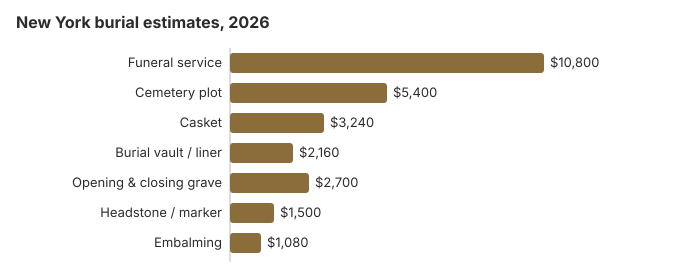

Burial Costs in New York (2026)
New York is one of the most expensive states in our model for burial: $24,800 to $29,300 when a $10,800 funeral service, a $5,400 plot and the other cemetery fees are combined. It is also one of the few states that require a licensed funeral director to handle a burial, and its not-for-profit cemeteries must file their prices with the state. This page covers those rules, New York City's burial assistance, the permit for moving a grave, and the state's national and state veterans cemeteries.
Pricing a New York Burial, Charge by Charge
| Burial charge | New York figure | Low to high |
|---|---|---|
| Funeral service | $10,800 | $8,100 – $14,040 |
| Cemetery plot | $5,400 | $2,700 – $10,800 |
| Casket | $3,240 | $1,080 – $8,640 |
| Burial vault / liner | $2,160 | $800 – $10,000 |
| Opening & closing grave | $2,700 | $500 – $3,000 |
| Headstone / marker | $1,500 | $500 – $5,000+ |
| Embalming | $1,080 | $500 – $1,500 |
About the New York figures: they come from our model rather than from asking New York providers, so hold real quotes up against them; they are not a price promise or advice. Read our method and the disclaimer.

Funeral home and cemetery together, a New York burial comes to $24,800 to $29,300 on our figures, with the casket and headstone setting most of the range.
New York Burial Types
Bringing a New York Burial Bill Down
Places a New York family can save:
- Get two bills, not one. The funeral home and the cemetery charge separately in New York, so ask each for its own written prices; the funeral home's General Price List lets you drop goods and services you do not want.
- Ask about winter and weekend charges. Some cemeteries charge more to open a grave on weekends or in frozen-ground months, or hold the casket until spring; get any such fee in writing before you sign.
- Ask for the filed price list. A not-for-profit cemetery corporation must file its rules and charges with the state Division of Cemeteries and give you a printed price list on request (N-PCL Article 15).
- Price cemeteries in more than one county. Charges differ from one cemetery to the next, so comparing a few within reach, including religious and municipal ones, can show a wide spread.
- Ask whether a liner will do. Our model puts a vault at $2,160 in New York, and a cemetery that requires an outer container may accept a plainer liner.
- Choose direct burial. Leaving out embalming, a viewing and a service removes several charges from the $10,800 service estimate, though a New York funeral director must still handle the burial.
- Price the marker separately. Ask the cemetery what it allows and what foundation fee it charges, then get a monument dealer's quote.
Regulated and Unregulated New York Cemeteries
New York's Division of Cemeteries oversees not-for-profit cemetery corporations, which must file their prices and rules. Religious, municipal, family and national cemeteries are outside its reach, so with those, the family has only the cemetery's own written prices to rely on. Knowing which kind a cemetery is tells you where to go if a charge does not match what you were told.
Burial Resources
- Funeral Consumers AllianceNonprofit consumer advocacy for funeral pricing
- Headstone & Monument GuideCosts, types, and buying tips
- Green Burial OptionsEco-friendly and natural alternatives
- Best Online Casket RetailersCaskets bought online often cost less
- Best Burial InsuranceCompare plans to cover burial expenses
Compare Funeral Costs
- Average Funeral Cost in 2026National cost breakdown with real prices
- Cremation vs. Burial Cost ComparisonSide-by-side price comparison to help you decide
- Funeral Cost BreakdownEvery line item explained: know what you're paying for
- Cheapest Funeral OptionsLower-cost alternatives, with typical price ranges
- Direct Cremation: Most Affordable OptionNFDA 2023 median $2,645 with a family-supplied container (latest available)
- How to Compare Funeral PricesStep-by-step guide to getting the best price
Frequently Asked Questions
What will a New York burial cost?
We estimate $24,800 to $29,300 for a New York burial: a $10,800 funeral service, a $5,400 plot, a $2,160 vault, $2,700 for opening and closing the grave, a $3,240 casket and a headstone from $500 to $5,000.
Does New York require a burial vault?
No New York statute requires one; the cemetery's rules decide. Many cemeteries ask for an outer container, and a liner may satisfy that, so get the policy in writing.
Which choices lower a New York burial bill?
On most New York price lists the lowest burial is direct burial, which skips embalming and any viewing or service. You can buy the casket from another seller, and under the FTC Funeral Rule the funeral home may not charge a fee to accept it. For a veteran, a national cemetery such as Calverton covers the plot, the opening and closing, a liner and the headstone for free.
How should I compare New York cemeteries?
Start by finding out what kind of cemetery it is. New York's Division of Cemeteries regulates not-for-profit cemetery corporations, which must file their rules and prices with the state and give you a printed price list on request (N-PCL Article 15). Religious, municipal, family and national cemeteries are outside its jurisdiction.
Ask each cemetery for the price of the grave, opening and closing (often higher on weekends), foundation and marker fees, and any vault requirement. If a regulated cemetery charges more than its filed price, raise it with the cemetery first and then with the Division of Cemeteries (518-474-6226).
What does a New York burial add up to?
Service $10,800, plot $5,400, casket $3,240, vault $2,160, opening and closing $2,700 and a $500 to $5,000 headstone add up to $24,800 to $29,300, before cash advance items such as death certificates.
Is natural burial possible in New York?
Some New York cemeteries take an unembalmed body in a plain, biodegradable casket with no vault; ask before you buy. A not-for-profit cemetery must show any such rule in the filings it makes with the Division of Cemeteries.
More for New York
Moving a grave to another New York cemetery
New York requires a permit only when a grave leaves the cemetery. A body cannot be disinterred for removal to another cemetery or a crematory without a permit from the registrar of vital statistics where the grave is located. Moving it within the same cemetery needs no permit. The funeral director makes the request on the state health commissioner's form, and the local registrar issues the permit (10 NYCRR § 13.3; checked October 29, 2026).
One cost can surprise families. If the original casket or burial container has broken down and the remains have to travel, they must be transferred to a new container. Ask the funeral home and the cemetery to quote the opening, the new container and the transport together before you commit to the move.
New York burial regulators and public help
New York funeral homes are licensed by the State Department of Health's Bureau of Funeral Directing (518-402-0785). Not-for-profit cemetery corporations answer to the Division of Cemeteries (518-474-6226), while religious, municipal and family cemeteries do not.
New York does not let a family handle a burial alone: under N.Y. Pub. Health Law § 4140 a licensed funeral director files the death certificate, moves the body, obtains the permit and supervises the disposition, as the Funeral Consumers Alliance summarizes it. The cemetery opens and closes the grave.
If plans change to cremation, New York sets no fixed waiting period, but a permit is required (Pub. Health Law 4145; N-PCL 1517).
Help with the cost
In New York City, HRA pays up to $1,700 toward a burial, but only when the whole bill is $3,400 or less; elsewhere the county social-services district sets the amount (NYC HRA). Ask the district whether its limit counts the cemetery charges.
Veterans
Calverton (631-727-5410), Bath (607-664-4853), Gerald B. H. Solomon Saratoga (518-581-9128) and Western New York (585-297-1300) National Cemeteries take burials; Long Island (631-454-4949), St. Albans (718-298-8545) and Woodlawn (607-732-5411) take cremated remains only. The state runs the New York State Veterans Cemetery - Finger Lakes (607-379-0197). An eligible veteran's grave, opening and marker cost nothing (VA National Cemetery Administration).
New York burial checklist
- Get the funeral home's price list and the cemetery's filed or written prices before agreeing to anything.
- Ask the cemetery whether a headstone from a monument dealer is allowed, and what foundation fee applies.
- Outside the city, ask the social-services district about its burial limit.
- For a veteran, have the DD214 ready when you call Calverton or another national cemetery.
- Report a funeral home to 518-402-0785, or a not-for-profit cemetery to 518-474-6226.